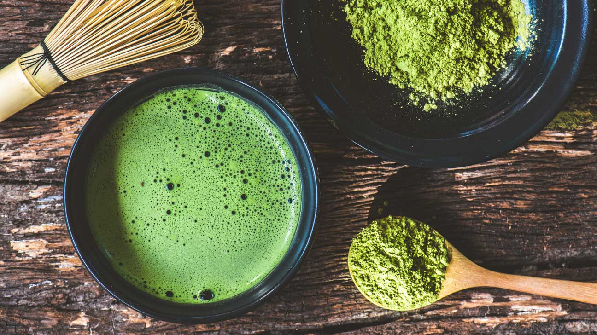

Welcome to My Matcha Ritual
Hi, I'm Vrinda! I recently discovered the joy of making matcha at home, and it's become one of my favorite daily rituals. What started as a way to save money on expensive café drinks quickly turned into a deeper appreciation for the process and health benefits of matcha. Preparing matcha feels meditative – from sifting the vibrant green powder to whisking it into a smooth, frothy drink. Beyond the calm it brings, matcha is packed with antioxidants and provides a clean, sustained energy boost.
Experimenting with new recipes is my favorite part. I love mixing flavors and creating my own syrups to take my matcha to the next level. Whether I'm crafting an iced matcha on a hot afternoon or trying a strawberry-infused twist, each cup feels like a small creative moment in my day. I hope this site inspires you to try making matcha at home too!